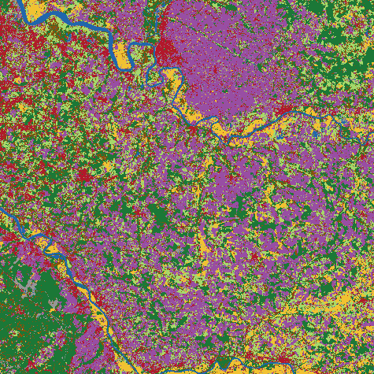
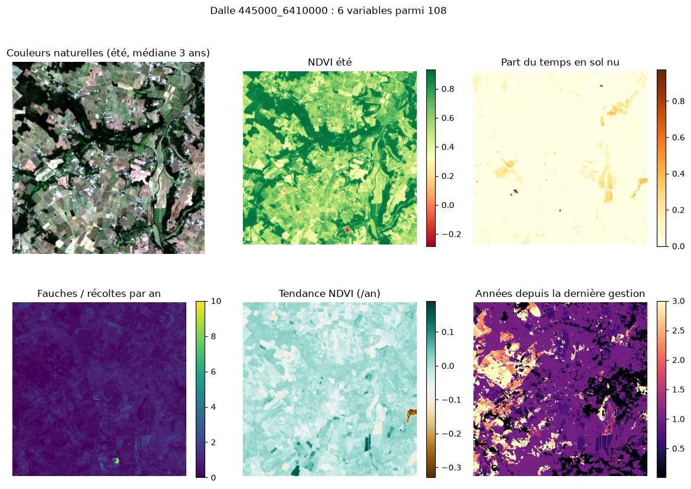
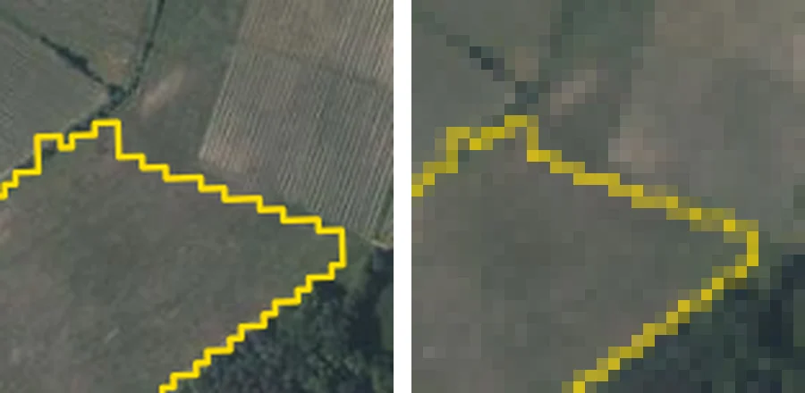
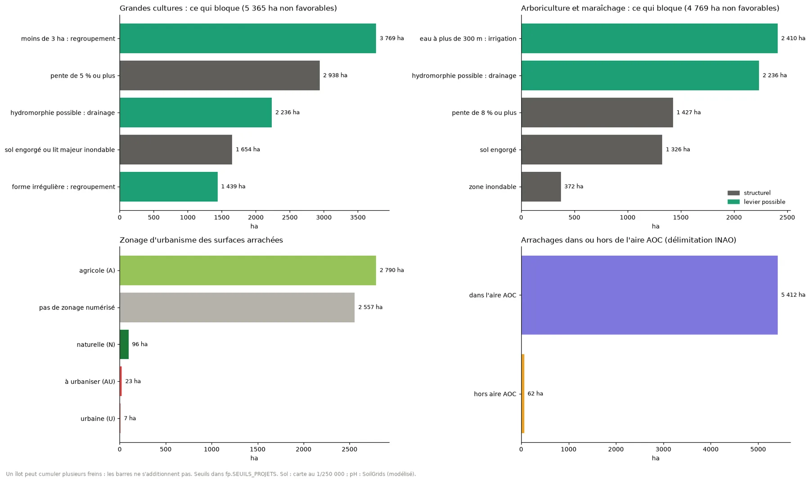
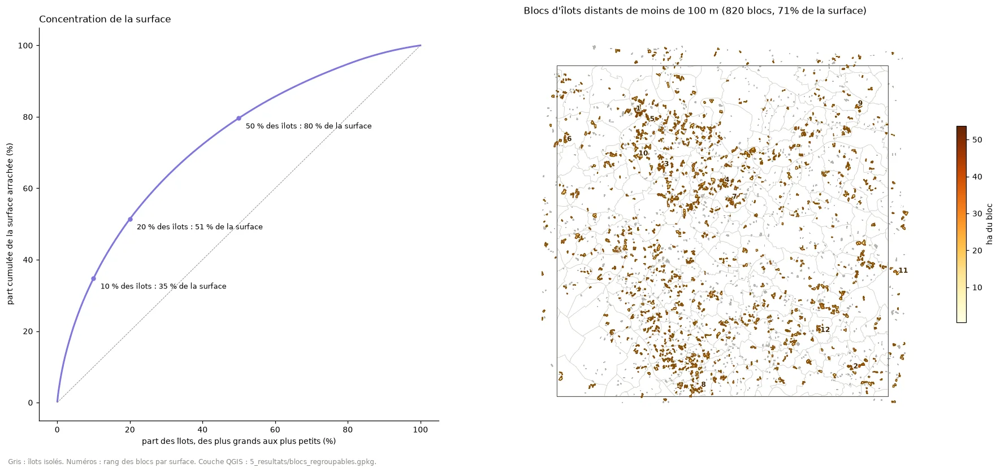
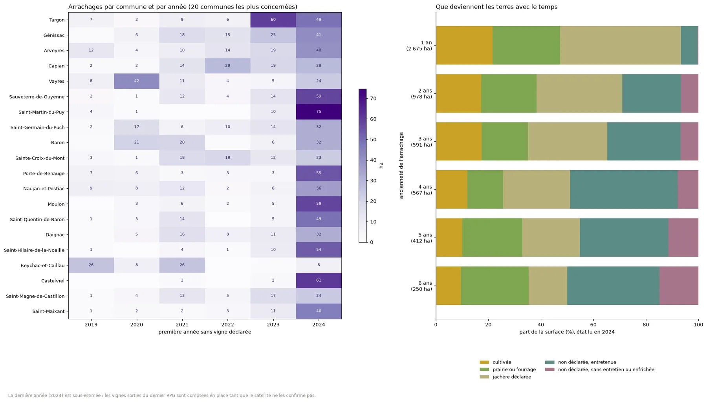
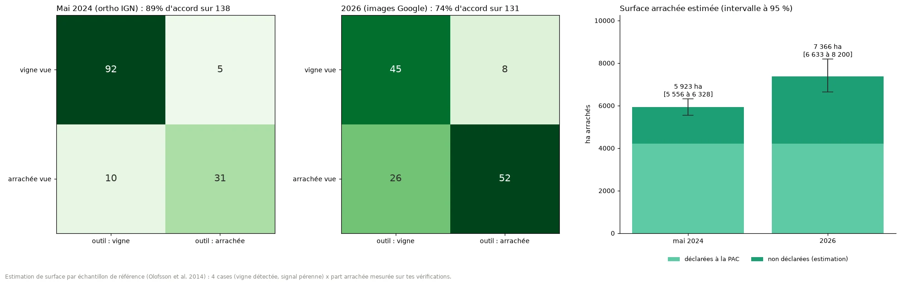
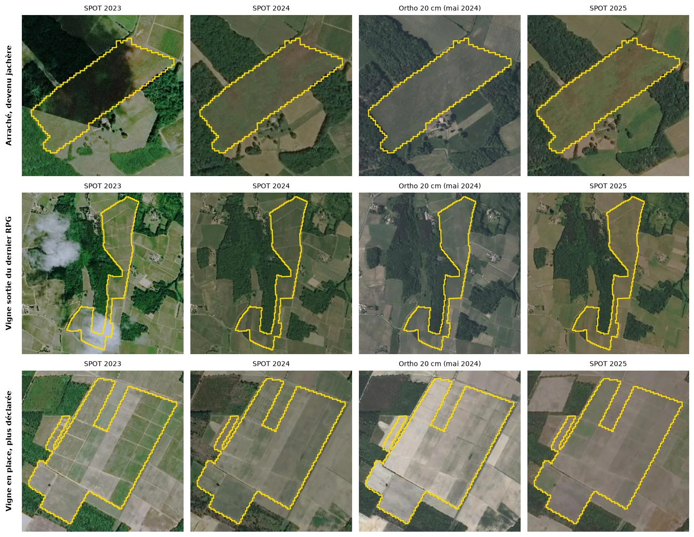
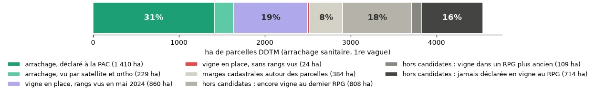

En Gironde, environ 21 000 ha de vignes ont été arrachés d'août 2023 à mai 2026. Or un tiers des anciennes parcelles de vigne ne sont plus déclarées du tout à la PAC : on ne sait plus si elles ont été arrachées, ni ce qu'elles sont devenues. Ce projet propose une méthode reproductible, fondée sur des images satellite et aériennes, pour répondre parcelle par parcelle et aider à décider quoi en faire.
La vidéo n'a pas pu se charger.
Fichier absent ou format non lu par ce navigateur. Le fichier videos/vignes_arrachees.mp4 doit se trouver dans un dossier videos à côté de cette page. Le reste du site fonctionne sans elle.
La crise du vignoble bordelais a conduit à des arrachages massifs, aidés ou non. Les aides imposent ensuite de renaturer ou de diversifier les parcelles, et collectivités, conseillers et opérateurs fonciers cherchent à savoir où sont ces terres et ce qu'elles deviennent. La source ouverte la plus complète, le Registre parcellaire graphique (RPG) des déclarations PAC, n'y répond qu'en partie.
de vignes arrachés en Gironde d'août 2023 à mai 2026 : 12 284 ha avec une aide publique, environ 8 700 ha sans aide.
Agreste Nouvelle-Aquitaine, Essentiel n°80, juin 2026.
des parcelles déclarées en vigne en 2022 ne sont plus déclarées du tout à la PAC en 2025. 53,5 % sont toujours en vigne, 11,6 % déclarées autre chose.
Agreste Nouvelle-Aquitaine, Essentiel n°80, juin 2026 (données PAC 2025).
proposés à la Foncière d'avenir en Gironde (430 dossiers, plus de 6 500 parcelles), qui cherche à identifier le foncier libéré par l'arrachage. Les friches viticoles font partie des premiers critères retenus.
Préfecture de Nouvelle-Aquitaine, 19 juin 2026 ; R. Lecocq, Pleinchamp, 15 juillet 2026.
Jachère, prairie, culture : la déclaration PAC dit ce qu'elle est devenue.
Plus de demande d'aide, changement d'exploitant : la vigne est toujours là. La compter comme arrachée enverrait sur le terrain pour rien.
Entretenue, en friche, en train de se boiser ? La PAC ne dit plus rien. C'est l'angle mort que l'outil éclaire.
Un carré de 40 km de côté (1 600 km²), centré sur l'Entre-deux-Mers (0,20° ouest, 44,75° nord). Il déborde sur le Libournais au nord de la Dordogne et sur les Graves à l'ouest de la Garonne. Le calcul tourne sur 81 dalles de 5 km, traitées une par une.
La méthode s'applique à une autre zone en changeant son centre et sa taille : rien n'est propre à ce carré.

Le script télécharge tout seul chaque source (services de l'IGN, catalogue d'images Sentinel-2, API naturalistes, Géorisques). Les contrôles sont faits par photo-interprétation, pas sur le terrain.
| Donnée | Producteur | Résolution, dates | Rôle dans l'outil |
|---|---|---|---|
| Registre parcellaire graphique (RPG) | IGN, ASP | Parcelles déclarées, 2018 à 2024 | Repérer les parcelles déclarées en vigne puis plus en vigne ; lire ce qui est déclaré à la place. |
| Sentinel-2 L2A | Copernicus, via Microsoft Planetary Computer | 10 m, 10 bandes, 2023 à 2025 ; scènes à moins de 70 % de nuages ; environ observations sans nuage par pixel | Carte d'occupation du sol, fauches, sol nu, évolution du NDVI. |
| BD ORTHO | IGN | 20 cm (lue à 25 cm par pixel), prise de vue du 11 mai 2024 | Voir les rangs de vigne. |
| BD TOPO, BD Forêt, OCS GE | IGN | Vecteur | Exemples d'apprentissage du modèle (forêt, eau, bâti, cultures), distance à la forêt. |
| Zonages et milieux | INPN (PatriNat), IGN | ZNIEFF 1 et 2, Natura 2000, arrêtés de biotope, réserves, zones humides et prairies sensibles BCAE, haies | Indice écologique et enjeu principal. |
| Espèces observées | GBIF, OpenObs (MNHN) | Mailles de 2 km, observations de 2000 à 2026 ; espèces quasi menacées à en danger critique (UICN) | Composante « espèces menacées » de l'indice. |
| Eau, sols, risques | BD TOPO, carte des sols INRAE, SoilGrids (ISRIC), Géorisques | Cours d'eau, hydromorphie, pH et carbone modélisés, zones inondables, argiles, cavités | Contraintes des projets, analyses de sol conseillées. |
| Urbanisme | Géoportail de l'urbanisme | Zonage des PLU, servitudes | Contexte réglementaire dans chaque fiche. |
| Contrôles à l'œil | Photo-interprétation | 138 parcelles sur l'orthophoto de mai 2024, 131 sur des images de 2026 | Caler le modèle, corriger l'estimation de surface. |
| Arrachage sanitaire, 1re vague | DDTM de la Gironde (data.gouv.fr) | Parcelles cadastrales, demandes de fin 2023, Licence Ouverte 2.0 | Validation indépendante. |


Après le point de départ (repérer les parcelles sorties de la vigne), cinq étapes, numérotées comme dans la vidéo. Chacune écrit ses résultats sur le disque, se relance seule et se vérifie. Clique sur une étape pour le détail : ce qu'elle fait, avec quels paramètres, et pourquoi.
La démo refait le calcul du script en direct sur une image simulée de 64 m de côté. Des rangs réguliers donnent un point lumineux dans le spectre (à droite) : plus il est net par rapport au bruit voisin, plus le score monte.
Image simulée, 64 × 64 m
Spectre. Anneaux : périodes de 4 m et 1 m. Cercle vert : pic retenu.
Ce sont des règles expertes, écrites dans le script avec leurs seuils. Elles ne sont pas calibrées sur des données de terrain : elles servent à ouvrir la discussion, à valider avec des conseillers.
L'entonnoir suit les étapes de la méthode. Chaque barre représente toute la surface sortie de la vigne PAC, découpée un peu plus finement à chaque étape.
Hectares arrondis à l'unité : une somme d'arrondis peut différer d'un hectare du total.
Une parcelle peut sortir de la vigne dans la PAC sans être arrachée, par exemple si elle n'est simplement plus déclarée. L'outil ne dit pas pourquoi : il constate que, sur l'orthophoto de mai 2024, ces parcelles ont des rangs nets ou un signal de culture pérenne. Sans ce tri, plus de la moitié des parcelles d'une liste « vignes arrachées » tirée de la PAC seraient de fausses pistes ().
Devenir de la surface arrachée selon le nombre d'années depuis la dernière vigne déclarée (état lu en 2024).
Trois lectures complémentaires : ce qu'il faut préserver, ce qui est réaliste sur le terrain, et où agir d'abord.
Clique sur une ligne pour voir la règle exacte.
Avant tout projet sur une ancienne vigne, chaque fiche conseille des analyses de sol, dont le cuivre hérité des traitements, et un sondage à la tarière pour l'hydromorphie.

Score sur 100 : grande surface 35 %, enjeu écologique 25 %, années sans gestion 25 %, regroupable avec ses voisines 15 %. Clique pour voir la parcelle sur la carte.


Cherche une commune, change de lecture, clique sur une parcelle pour ouvrir sa fiche : ce qu'elle est devenue, son enjeu de biodiversité, les projets possibles et leurs raisons, sa priorité.
Une liste de parcelles n'est utile que si l'on sait à quel point s'y fier. Premier contrôle : comparer l'outil à mon œil, sur les mêmes images. Second contrôle : le confronter à des arrachages connus par ailleurs.
Sur un échantillon de parcelles, je note ce que montre l'image (vigne ou arrachée) et je compare au verdict de l'outil.
Méthode d'Olofsson et al. (2014), standard en télédétection : les parcelles candidates sont rangées en 4 cases (rangs détectés ou non, signal pérenne du satellite ou non). Dans chaque case, la part réellement arrachée mesurée sur les vérifications est appliquée à toute la surface de la case. Les erreurs de l'outil sont ainsi corrigées. La marge vient d'un bootstrap : le calcul est refait 2 000 fois en rééchantillonnant les parcelles vérifiées, et on garde les 95 % de résultats du milieu.


La DDTM de la Gironde publie les parcelles cadastrales arrachées avec l'aide sanitaire (première vague, demandes du 20 novembre au 20 décembre 2023, pour lutter contre la flavescence dorée). Ce sont des arrachages certains, recensés sans l'outil. On regarde ce que l'outil en dit.

| Catégorie | ha | Lecture |
|---|
L'outil ne décide pas à la place des gens. Il dit où regarder, ce qui est probable, ce qui bloque et ce qui reste à vérifier.
Chambre d'agriculture, bureaux d'études
Communes, intercommunalités
SAFER, Foncière d'avenir en Gironde
Conservatoires, associations, gestionnaires d'espaces
Un seul fichier Python, script_vignes_arrachees.py (7 795 lignes, 256 fonctions), et un notebook commenté qui l'appelle étape par étape. Conçu pour Onyxia (SSP Cloud) : il installe ses bibliothèques, reprend là où il s'est arrêté et s'applique à une autre zone en changeant deux paramètres.
| Étape | Fonction | Ce qu'elle fait | Ce qu'elle écrit |
|---|---|---|---|
| 1. Zone | etape_zone | Carré d'étude découpé en 81 dalles de 5 km, traitées une par une | 0_zone/ |
| 2. Bases | etape_bd | Télécharge RPG 2018 à 2024, BD TOPO, BD Forêt, OCS GE, zonages, sols, risques, haies, PLU | 1_references/ |
| 3. Sentinel-2 | etape_s2 | Cherche les images 2023 à 2025 (catalogue STAC) et calcule par pixel composites saisonniers, indices, séries, fauches | 2_sentinel2/ |
| 4. Exemples | etape_etiquettes | Transforme les bases en exemples d'apprentissage (9 classes), en érodant les bords | 3_apprentissage/ |
| 5. Modèle | etape_modele | Forêt aléatoire de 300 arbres, nettoyage des exemples douteux, validation croisée par blocs | modele/ |
| 6. Carte | etape_prediction | Prédit chaque dalle puis assemble la mosaïque à 10 m | 4_cartes/ |
| 7. Parcelles | etape_parcelles | Repère les vignes sorties du RPG, découpe les îlots, calcule devenir, enjeux, projets, priorité | parcelles_arrachees.gpkg |
| 7b. Correction | etape_correction | Mesure les rangs sur l'orthophoto, cale le modèle, corrige, estime la surface | chiffre_cle.json |
| 8. Rapport | etape_rapport | Couches de vérification QGIS, carte web, figures, rapport HTML | 5_resultats/ |
| Validation | verite_ddtm | Confronte l'outil aux arrachages DDTM et corrige le rappel avec la vérification | validation/ |
| Export | exporter_site | Rassemble les données de ce site | site_donnees.zip |
REPRENDRE = True, toute étape déjà calculée est relue. Les scores de rangs sont mis en cache parcelle par parcelle : un « Run All » relit ce qui est fait au lieu de le recalculer.autotest() fait tourner la correction, les indices, l'estimation et le rapport sur une petite zone fictive, sans réseau.# extrait réel : le score de rangs (simplifié) def score_rangs(gris, masque, res=0.25, pmin=1.0, pmax=4.0): a = gris - ndi.gaussian_filter(gris, 6.0 / res) # passe-haut a *= np.outer(np.hanning(h), np.hanning(w)) # fenêtre P = np.abs(np.fft.fftshift(np.fft.fft2(a))) ** 2 # spectre bande = (F >= 1 / pmax) & (F <= 1 / pmin) # 1 à 4 m i = np.argmax(np.where(bande, P, -1)) # pic # même direction (6° près), fréquences voisines bas = (dt <= 6) & (F >= 0.55 * f0) & (F <= 0.8 * f0) haut = (dt <= 6) & (F >= 1.25 * f0) & (F <= 1.6 * f0) fond = np.sqrt(np.median(P[bas]) * np.median(P[haut])) return P.ravel()[i] / fond # score
# cellule de paramètres du notebook import script_vignes_arrachees as fp fp.POINT_LONLAT = (-0.20, 44.75) # centre de la zone fp.TEST_KM = 40 # carré de 40 km fp.REPRENDRE = True # Run All rapide res = fp.etape_correction() # rangs, correction, estimation fp.verite_ddtm() # validation indépendante fp.exporter_site() # données de ce site
Bibliothèques : GeoPandas, Shapely, Rasterio, odc-stac et pystac, scikit-learn, SciPy, NumPy, pandas, Matplotlib. Exécution sur Onyxia, stockage MinIO.